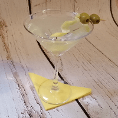

NEGRONI
La creación del Negroni se remonta a Florencia, en la década de 1920. El conde Camillo Negroni, buscando una bebida más fuerte que su usual Americano, inspiró a su barman a añadir ginebra en lugar de soda

GIN FIZZ
La receta de gin fizz es muy fácil, y si estas cansado de tomar siempre “el aburrido” gin + tonica, pues te alentamos a probar algo diferente ya que esta bebida clásica tiene sólo 4 ingredientes.

MARTINI
El martini o martini seco (Dry Martini en inglés) es uno de los cócteles más conocidos en el mundo, compuesto de ginebra con una porción de vermut. Suele servirse en copa de cóctel, adornado con una aceituna.